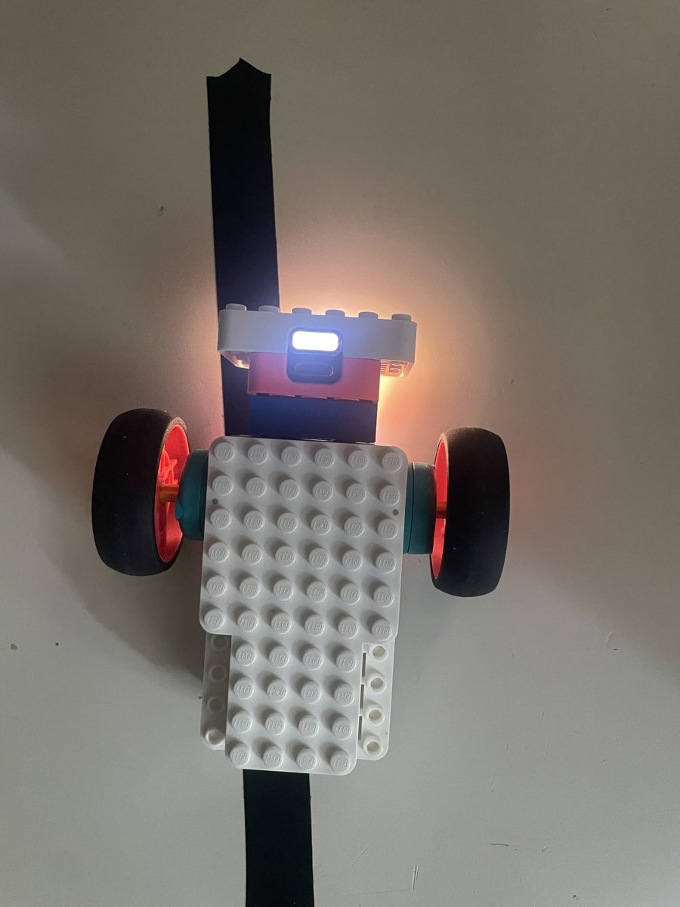

These numbers are your robot's calibration — what the panel below measures and saves in this browser after you measure your own robot (until then, a generic reference build). Every simulation on this page uses them, so the sliders below are showing you your robot's behavior, not a generic reference build. Full background: docs/00-sim.md.
Sample build

What calibration measures
To estimate e and θ from one raw sensor number, we need to measure a few things about this specific robot first — that's what calibration is, and it's exactly the 4 steps in the panel below:
- reflection fully over the black tape
- reflection fully over the white background
- the width of the sensor's transition region between them (± e_max)
- wheel speed at 100% and the track width
The model (docs/00-sim.md & 01-lqr.md)
Two numbers describe the robot: lateral offset e [mm] and heading error θ [rad]. Forward speed v and curvature κ of the line drive them:
ω [rad/s] is the yaw rate every controller below is choosing. The sensor can only report e inside ±e_max — outside that window the reading saturates and the robot goes "blind." That single hard number is what breaks fixed-speed LQR on sharp turns and is the whole reason MPC gets invented.
Connect to robot
Calibration
Redo calibration
Live oscilloscope
if reflection > threshold: turn left, else turn right —
the simplest control law there is. It only uses the sign of the
error, so it can't help but overshoot and turn back, forever. Full
writeup: README, Session 1.
Controls
Result
Run on real robot
Equations
Model (same as every other tab):
Control law — the sign of e is the only thing bang-bang looks at:
The simulated calculation
e, theta = E_MAX * 0.7, 0.0 # start near the edge of the sensor window
log = []
for i in range(int(6.0 / DT)): # 6 s of simulated time
sign = 1.0 if e > 0 else -1.0
omega = -omega_mag * sign
log.append((i * DT, e))
e, theta = step(e, theta, v, omega, kappa=0.0, dt=DT)
def step(e, theta, v, omega, kappa, dt):
e_next = e + dt * v * math.sin(theta)
th_next = theta + dt * (omega - kappa * v)
return e_next, th_nextProportional (and PD) control, entering a turn of radius R at constant speed. Push k_p up and it oscillates on entry; push it down and it settles into a large steady-state offset once it's in the turn — "corners badly." Full writeup: README, Session 2.
Controls
Result
Run on real robot
Equations
Model (same as every other tab):
Control law — proportional on the error, plus derivative on the heading θ as a stand-in for de/dt (since ė ≈ vθ):
The simulated calculation
s = e = theta = 0.0
log = []
for i in range(int(t_max / dt)):
if s > track.length:
break
e_measured = coerce(e, e_max) # sensor saturates outside +-e_max
omega = -kp * e_measured - kd * theta
log.append((i * dt, e, theta))
kappa = track.kappa(s) # 0 on the straight, 1/R in the turn
e, theta = step(e, theta, v, omega, kappa, dt)
s += v * dt
def coerce(e, e_max):
return max(-e_max, min(e_max, e)) # sensor only sees +-e_max either side
def step(e, theta, v, omega, kappa, dt):
e_next = e + dt * v * math.sin(theta)
th_next = theta + dt * (omega - kappa * v)
return e_next, th_next
class Track:
def __init__(self, segments): # [(length_mm, radius_mm|None), ...]
self.length = sum(L for L, _ in segments)
def kappa(self, s): # curvature at arclength s
acc = 0.0
for L, radius in self.segments:
if s < acc + L:
return 0.0 if radius is None else 1.0 / radius
acc += L
return 0.0Same scenario, but the gains come from a cost function instead of a guess: pick Q_e, Q_θ, R and the Riccati equation hands back k_e, k_θ. Widen the turn radius until the verdict flips to BLIND — that's the steady-state offset e_ss = −κv/k_e breaking the sensor window. Full writeup: docs/01-lqr.md, and docs/02-mpc.md, "Where LQR runs out."
Cost weights
Gains (Riccati solution)
Result
Run on real robot
Equations
Model (same as every other tab):
Control law — same form as P/PD, but the gains aren't guessed:
Gains, closed form (continuous-time; full discrete-time derivation in docs/01-lqr.md):
Track shape (plan view)
The simulated calculation
k_e, k_th = lqr_gains_discrete(v_cmd, dt) # solved once, offline (Riccati)
s = e = theta = 0.0
log = []
for i in range(int(t_max / dt)):
if s > track.length:
break
omega = -k_e * coerce(e, e_max) - k_th * theta
log.append((i * dt, s, e, theta, v_cmd, omega))
kappa = track.kappa(s)
e, theta = step(e, theta, v_cmd, omega, kappa, dt)
s += v_cmd * dtSame steering law as LQR (using the gains from the LQR tab), but forward speed is re-decided every control period from a short preview of the track. Watch v(t) drop before the corner, and e(t) stay inside the window where fixed-speed LQR went blind. Full writeup: docs/02-mpc.md and docs/03-lqr-vs-mpc.md.
MPC controls
LQR vs MPC, this run
Convergence: MPC → LQR as N grows
Run on real robot
Equations
Steering law is identical to LQR's, just re-solved for whichever speed v is currently chosen:
What's new: v is no longer fixed. Every control period it's re-picked from a short list of candidates by minimizing a short-horizon cost:
The simulated calculation
def mpc_choose_speed(e, theta, s, track, candidates, horizon,
dt, e_max, v_ref, q_e, q_th, q_v, pen=1e4):
best_cost, best_v = float("inf"), candidates[0]
for v in candidates:
k_e, k_th = lqr_gains_discrete(v, dt) # re-solved per candidate speed
ep, thp, sp, cost = e, theta, s, 0.0
for _ in range(horizon): # roll forward under LQR steering
omega = -k_e * coerce(ep, e_max) - k_th * thp
cost += (q_e * ep**2 + q_th * thp**2) * dt
cost += pen * max(0.0, abs(ep) - e_max)**2 * dt # blindness penalty
ep, thp = step(ep, thp, v, omega, track.kappa(sp), dt)
sp += v * dt
cost += q_v * (v - v_ref)**2 * horizon * dt # prefer staying near v_ref
if cost < best_cost:
best_cost, best_v = cost, v
return best_v
s = e = theta = 0.0
log = []
for i in range(int(t_max / dt)):
if s > track.length:
break
v = mpc_choose_speed(e, theta, s, track, candidates, horizon, dt, e_max, ...)
k_e, k_th = lqr_gains_discrete(v, dt)
omega = -k_e * coerce(e, e_max) - k_th * theta
log.append((i * dt, s, e, theta, v, omega))
e, theta = step(e, theta, v, omega, track.kappa(s), dt)
s += v * dt